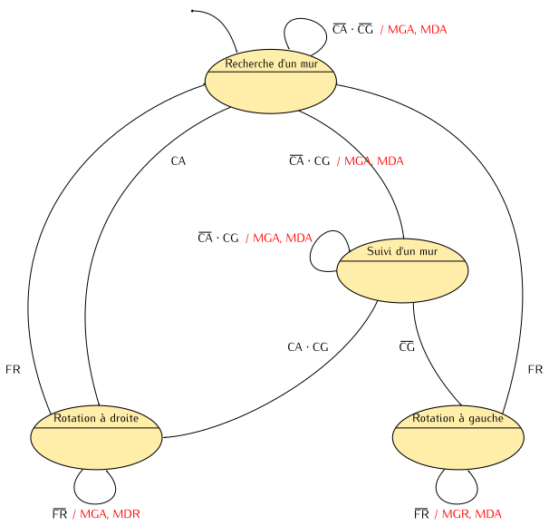

Un automate fini est un modèle qui représente le comportement d’un système
comme un ensemble d’états et de transitions.
La modélisation par automates est un outil très polyvalent qui est utilisé,
sous différentes formes, dans de nombreuses branches de l’informatique, de
l’électronique, ou des systèmes de production.
Dans ce chapitre, nous introduisons l’utilisation d’automates pour réaliser
des fonction logiques séquentielles à l’aide de circuits logiques,
mais les notions présentées ici sont facilement transposables dans d’autres domaines.
Automatiser le parcours d’un labyrinthe
Nous allons poursuivre le développement de la partie commande de notre robot.
Il s’agit à présent de lui faire parcourir un labyrinthe de manière autonome.
Une stratégie simple de parcours du labyrinthe consiste à toujours garder le contact avec le mur gauche jusqu’à atteindre la sortie
(voir figure ci-dessous) – naturellement, on peut tout aussi bien choisir le mur droit, l’essentiel étant de suivre toujours le même mur
pendant toute la durée du parcours.
Cette stratégie ne fonctionne que dans le cas de labyrinthes dits parfaits,
dans lesquels il n’y a pas de risque que le robot tourne en rond sans jamais trouver la sortie.
Pour remplir cette mission, le robot disposera de nouveau capteurs associés aux signaux d’entrée suivants :
- CA (Capteur Avant) détecte la présence d’un obstacle à l’avant du robot.
- CG (Capteur Gauche) détecte la présence d’un obstacle à gauche du robot.
- CD (Capteur Droit) détecte la présence d’un obstacle à droite du robot.
Rappelons que nous travaillons sur un modèle de robot très simplifié.
Si vous tentez de réaliser un tel robot, vous vous rendrez compte rapidement que de nombreux problèmes mécaniques
n’ont pas été pris en compte, comme par exemple les frottements et la difficulté de faire
tourner le robot de précisément 90 degrés.
Stratégie de fonctionnement du robot autonome
Détaillons les situations qui peuvent se présenter au cours d’un parcours du labyrinthe
en appliquant la stratégie de la main gauche présentée plus haut (les numéros font référence
au schéma du labyrinthe) :
- Au démarrage, le robot peut se situer n’importe où.
Il avance en ligne droite à la recherche d’un mur.
Si le premier mur détecté est à gauche, le robot continue en ligne droite le long de ce mur ;
si le premier mur détecté est à l’avant, le robot effectue un quart de tour à droite de telle sorte que le mur
se retrouve sur sa gauche, ensuite il continue en ligne droite le long de ce mur.
- Tant qu’il voit un mur sur sa gauche, le robot avance en ligne droite.
- Dès qu’il n’y a plus de mur sur sa gauche, le robot effectue un quart de tour à gauche.
- Si des murs sont détectés à l’avant et à gauche, le robot effectue un quart de tour à droite.
Combinatoire ou séquentiel ?
Confronté aux mêmes stimuli, le robot pourra réagir de différentes manières au cours du temps.
Par exemple, lorsqu’il n’y a pas de mur sur sa gauche ni à l’avant, le robot peut avoir
deux comportements différents :
au démarrage, il poursuit en ligne droite (1) ; en fonctionnement normal, il tourne à gauche (3).
La partie commande du robot autonome réalise donc une fonction logique séquentielle.
Pour développer ce circuit, nous devons donc suivre une méthode différente de
celle que nous avons exposée dans le cas du robot télécommandé.
Ici, les commandes des moteurs dépendront non seulement des entrées (les capteurs),
mais aussi de l’état dans lequel se trouve le robot.
États et transitions
Au cours du temps, le robot déroule une séquence d’actions dont l’enchaînement dépend des informations
qu’il reçoit de ses capteurs.
Ces actions sont décomposées en activités élémentaires (suivre un mur, effectuer un quart de tour à droite, attendre, etc).
À chaque instant, le robot doit posséder une connaissance de l’activité à effectuer :
on dit qu’il se trouve dans un certain état.
En fonction des informations en provenance de ses capteurs, il doit décider s’il continue l’activité en cours
(s’il reste dans le même état) ou s’il passe à une autre activité (s’il passe dans un autre état).
On appelle transition le passage possible entre un état et un autre.
La figure ci-dessous donne quatre scénarios de fonctionnement du robot et met en évidence
quatre états représentés par des rectangles arrondis.
Les transitions sont représentées par des flèches à côté desquelles nous avons indiqué les conditions qui déterminent
le passage d’un état à un autre.
État Recherche d’un mur
C’est l’état initial du robot.
Si un mur est détecté devant lui (CA=1), il passe dans l’état Rotation à droite.
Si la voie est libre devant lui (CA=0) et si un mur est détecté à sa gauche (CG=1),
il passe dans l’état Suivi d’un mur.
Dans les autres cas, il se déplace en ligne droite (MGA=1, MDA=1) jusqu’à détecter
la présence d’un mur devant lui ou sur sa gauche.
État Suivi d’un mur
Le robot se déplace en ligne droite (MGA=1, MDA=1) jusqu’à ce qu’il perde le mur situé à sa gauche
ou jusqu’à ce qu’il rencontre un mur devant lui.
S’il n’y a pas de mur sur sa gauche (CG=0), il passe dans l’état Rotation à gauche.
Sinon, si un mur est détecté devant lui (CA=1), il passe dans l’état Rotation à droite.
État Rotation à gauche
Le robot tourne sur place dans le sens anti-horaire (MGR=1, MDA=1) jusqu’à avoir accompli un quart de tour.
Nous ne détaillerons pas la technique utilisée pour déterminer si le robot a bien tourné de 90 degrés.
Pour le moment, nous supposerons qu’il existe un signal FR qui passe à 1 pour indiquer la fin de la rotation.
À la fin de la rotation (FR=1), le robot peut avoir perdu le contact avec le mur.
Par sécurité, nous lui imposons de retourner dans l’état Recherche d’un mur.
État Rotation à droite
Le robot tourne sur place dans le sens horaire (MGA=1, MDR=1) jusqu’à avoir accompli un quart de tour (FR=1).
Ensuite, il passe dans l’état Recherche d’un mur.
Si tout se passe comme prévu, cette recherche aboutit immédiatement et le robot passe
ensuite à l’état Suivi d’un mur.
Le comportement de notre robot peut être défini par un automate fini.
On utilise également le terme machine à état fini (en anglais Finite-State Machine, ou FSM)
car il s’agit d’un système qui possède un nombre fini d’états.
Il existe d’autres types de systèmes qui peuvent prendre un nombre infini d’états, mais ce n’est pas l’objet de ce cours.
Si vous entendez parler de machine à états (state machine) sans plus de précision, il s’agit le plus souvent
d’un automate fini.
Graphe d’états
Un graphe d’états est une représentation des états que peut prendre un système et des transitions entre ces états.
Sur la figure ci-dessous, nous indiquons les symboles utilisés dans les graphes d’états de ce document.

Un état est représenté par une ellipse avec en haut son nom et en bas les éventuelles actions
que le système doit effectuer lorsqu’il se trouve dans cet état.
Les actions correspondent généralement à l’activation de sorties booléennes.
Une transition est représentée par une flèche entre un état d’origine et un état destination.
À côté de la flèche, on indique sous quelle condition la transition peut être franchie
et quelles actions doivent être effectuées si cette condition est vraie.
La condition est typiquement une expression booléenne ;
si aucune condition n’est précisée, cela signifie que la transition doit toujours être franchie
(condition toujours vraie).
Actions associées uniquement aux états : machine de Moore
La figure ci-dessous propose un premier graphe d’états représentant le comportement du robot.
Ici, les actions effectuées par le robot ne dépendent que de l’état dans lequel il se trouve :
ce type d’automate est couramment appelé une machine de Moore.

Par convention, nous n’indiquons pas explicitement les remises à zéro des sorties.
Par exemple, dans l’état Recherche d’un mur, nous aurons MGA=1, MDA=1, MGR=0 et MDR=0.
Les conditions associées aux transitions sortant d’un même état doivent couvrir tous les cas
(il doit toujours exister un état de destination) et être mutuellement exclusives
(l’état de destination doit être unique).
Actions conditionnées par les entrées : machine de Mealy
Nous pouvons également décider que les actions effectuées par le robot dépendront de la valeur de ses capteurs.
Par exemple, dans les états Recherche d’un mur et Suivi d’un mur, nous ne ferons avancer le robot que s’il
n’y a pas d’obstacle devant lui (CA=0).
Dans les états Rotation à gauche et Rotation à droite, le robot ne tournera que si l’indicateur de fin
de rotation est à zéro.
Ce type d’automate est couramment appelé une machine de Mealy.
Sur le graphe d’états, ces actions conditionnées sont placées sur les transitions.
Une barre oblique sépare la condition de franchissement d’une transition et les actions correspondantes.
Pour faciliter la lisibilité, nous avons représenté les actions en rouge sur la figure ci-dessous.

Résumé
Un automate fini est un modèle qui représente le comportement d’un système comme un ensemble d’états et de transitions.
Une transition définit sous quelle condition le système peut passer d’un état d’origine à un état de destination.
Dans une machine de Moore, les actions que le système doit effectuer ne dépendent que de son état courant.
Sur le graphe d’états, elles sont représentées dans les états.
Dans une machine de Mealy, les actions que le système doit effectuer dépendent de son état courant et de la valeur des entrées.
Sur le graphe d’états, les actions qui dépendent des entrées sont placées le long des transitions.
{kind=link}
{kind=link}
{kind=link}